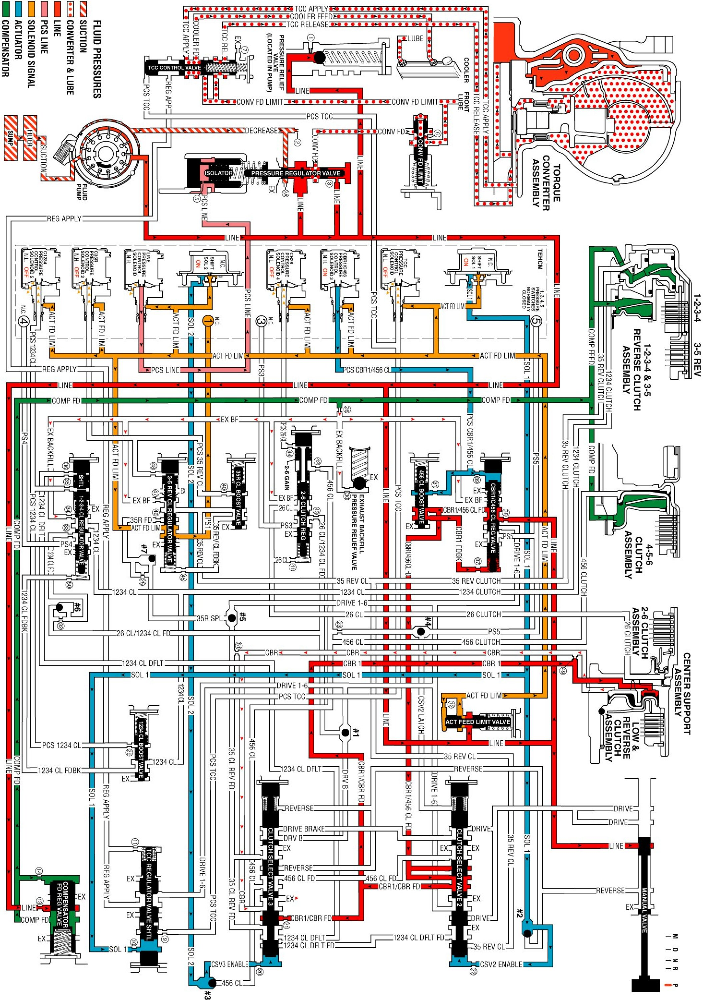
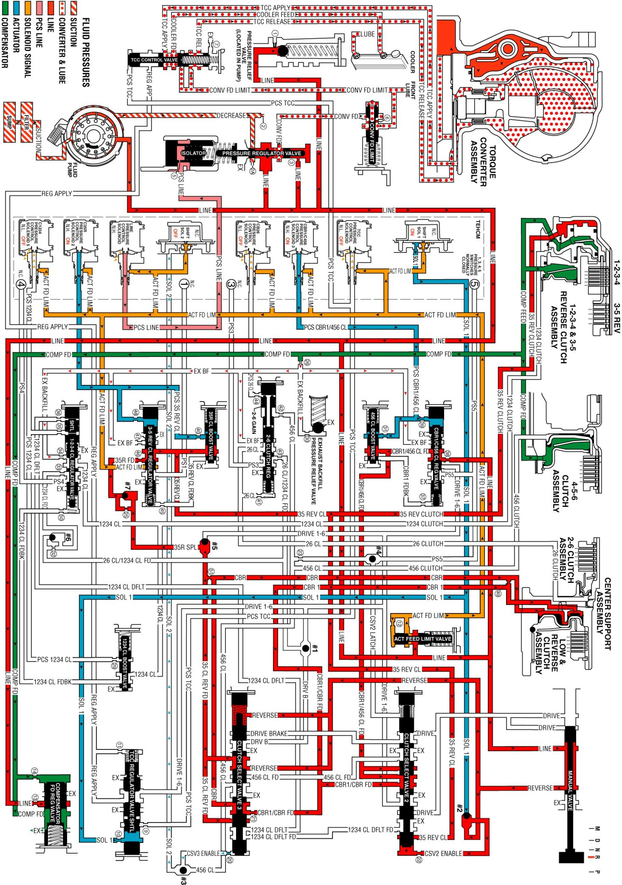
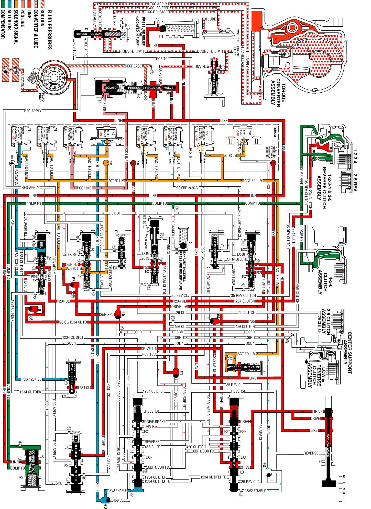
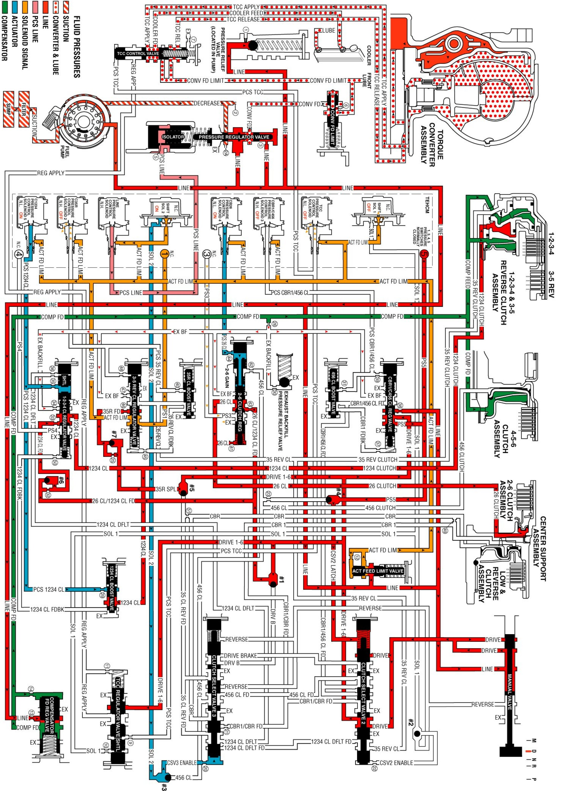
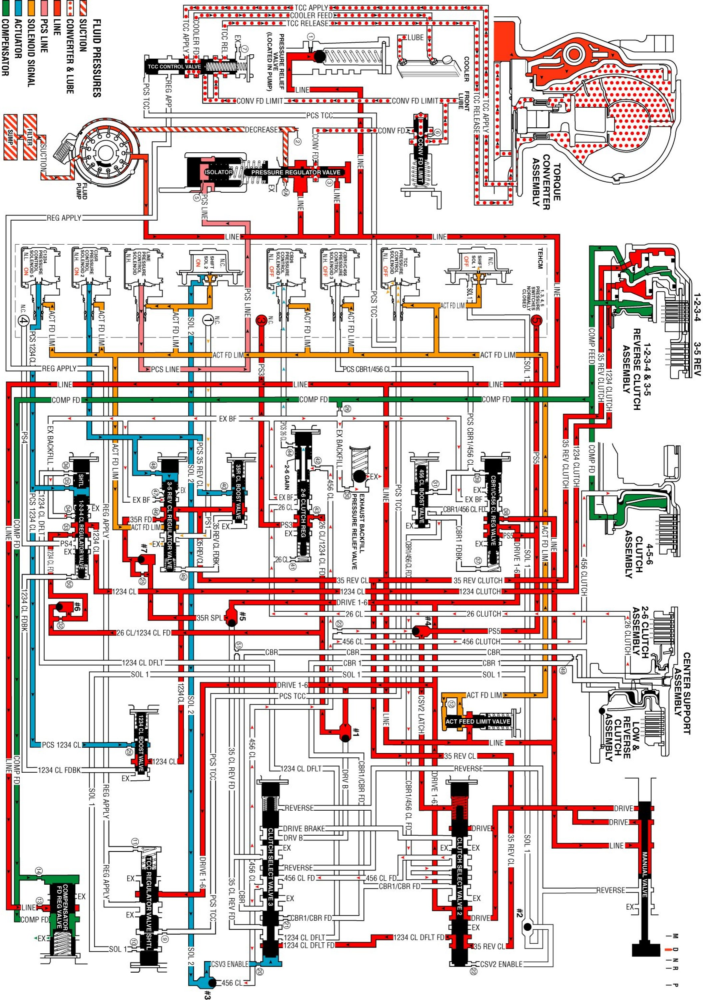
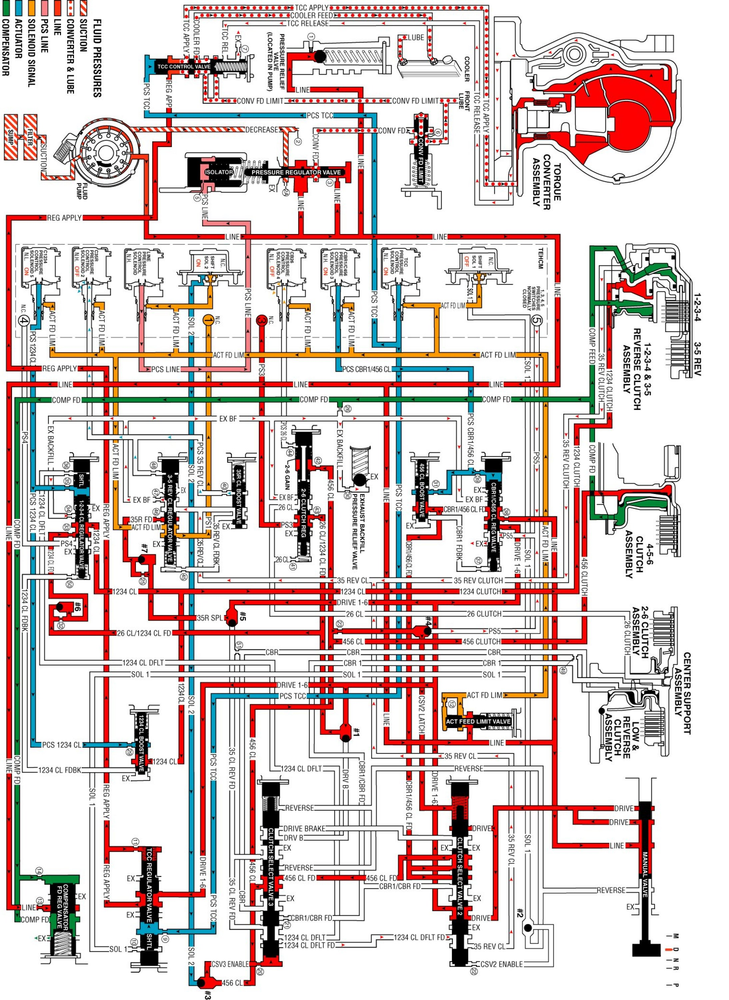
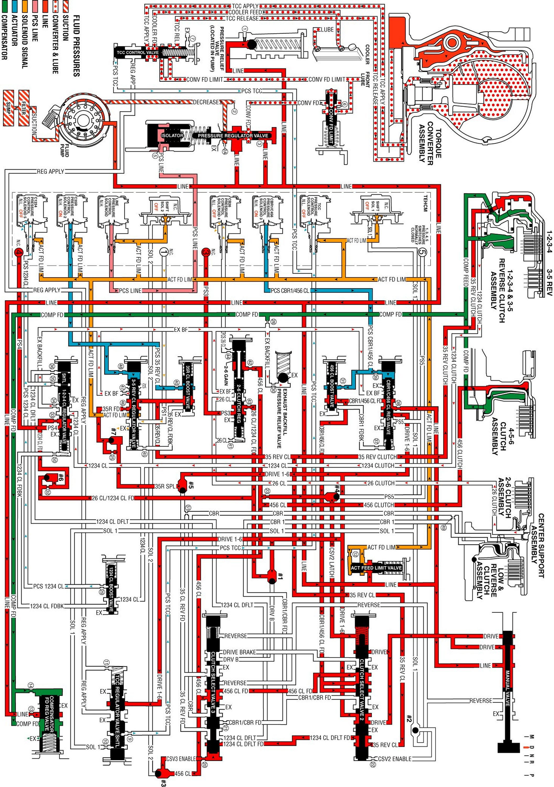

6L50/6L80/6L90 - Automatic Transmission
Park - Engine RunningPark - Engine Running:

Reverse
Reverse:

Neutral - Engine Running
Neutral - Engine Running:

Drive Range, First Gear Engine Braking
Drive Range, First Gear Engine Braking:

Drive Range, First Gear
Drive Range, First Gear:

Drive Range, Second Gear
Drive Range, Second Gear:

Drive Range, Third Gear
Drive Range, Third Gear:

Drive Range, Third Gear Default
Drive Range, Third Gear Default:

Drive Range, Fourth Gear
Drive Range, Fourth Gear:

Drive Range, Fifth Gear
Drive Range, Fifth Gear:

Drive Range, Fifth Gear Default
Drive Range, Fifth Gear Default:

Drive Range, Sixth Gear
Drive Range, Sixth Gear: